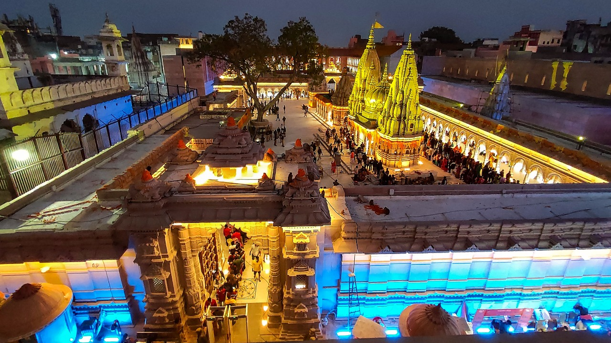

The Kashi Vishwanath Temple is a famous Hindu temple dedicated to Lord Shiva. It is located in Vishwanath Gali of Varanasi, Uttar Pradesh in India. The temple stands on the western bank of the holy river Ganga, and is one of the twelve Jyotirlingas, the holiest of Shiva temples. The main deity is known by the names Shri Vishwanath and Vishweshwara (IAST: Vishveshvara or Vishveshvur) literally meaning Lord of the Universe. Varanasi was called Kashi ("shining") in ancient times, and hence the temple is popularly called Kashi Vishwanath Temple. The temple is considered a central part of worship in the Shaiva culture by Hindu scriptures. It had been demolished several times by the Muslim rulers, most recently by Aurangzeb who constructed the Gyanvapi Mosque on its site. The current structure was built on an adjacent site by the Maratha ruler, Ahilyabai Holkar of Indore in the year 1780. Since 1983, the temple has been managed by the government of Uttar Pradesh.
